Below is the gallery. Out of my many many photos, I've chosen 12 of my favorite ones to be presented below. Which one is your favorite?
| 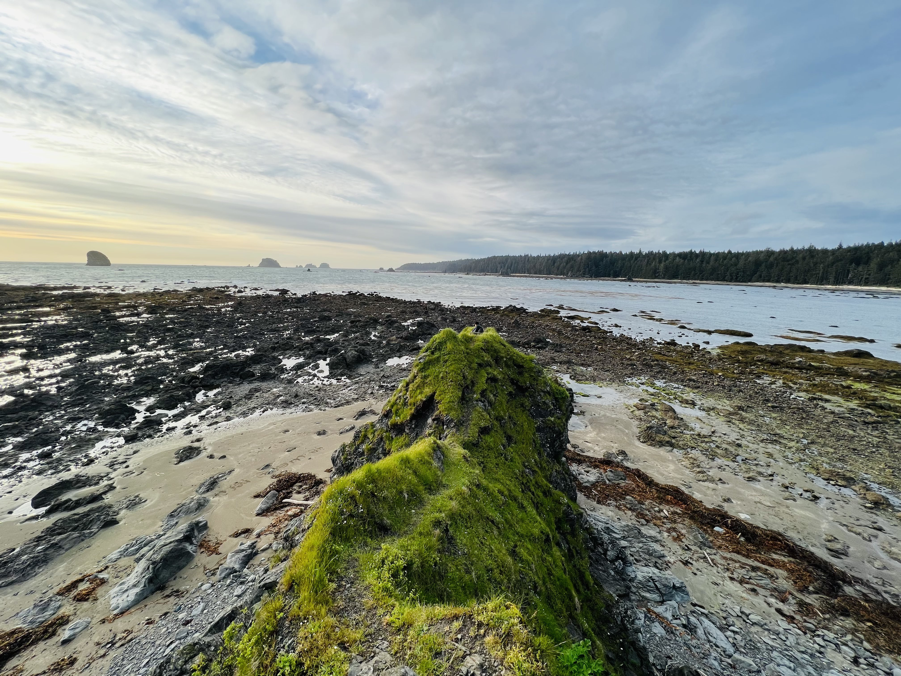 | One of my favorite photos, this is a panoshot from atop a 30 foot boulder formation out towards the distant lands. |
| 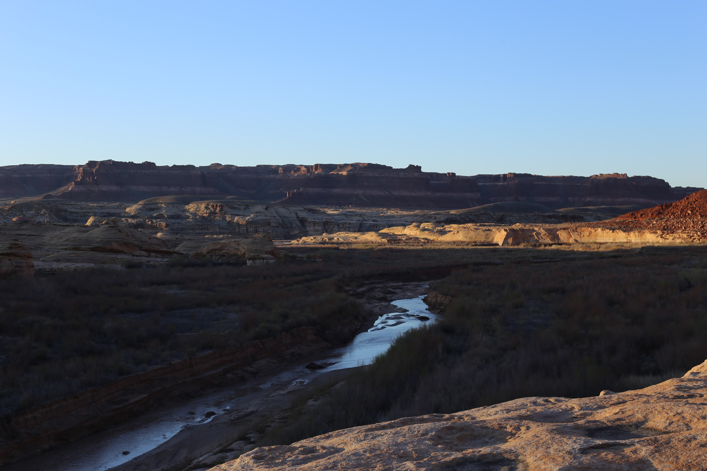 | 7:30am on top of a cliff in Utah, this picture was taken during the 2022 EBC trip. |
| 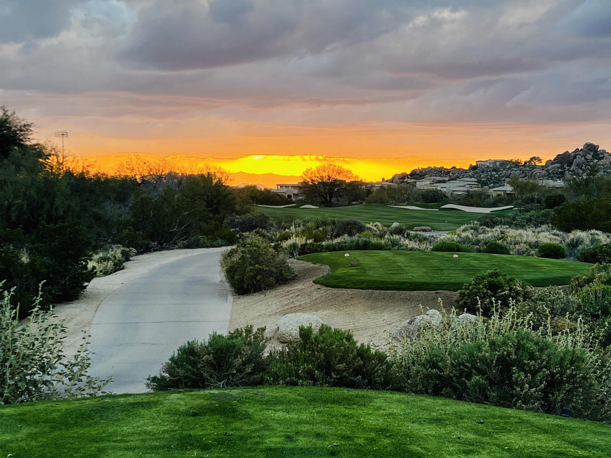 | This picture was taken at a renowned golf course in Phoenix, Arizona. During no other sport can such a view be captured. |
| 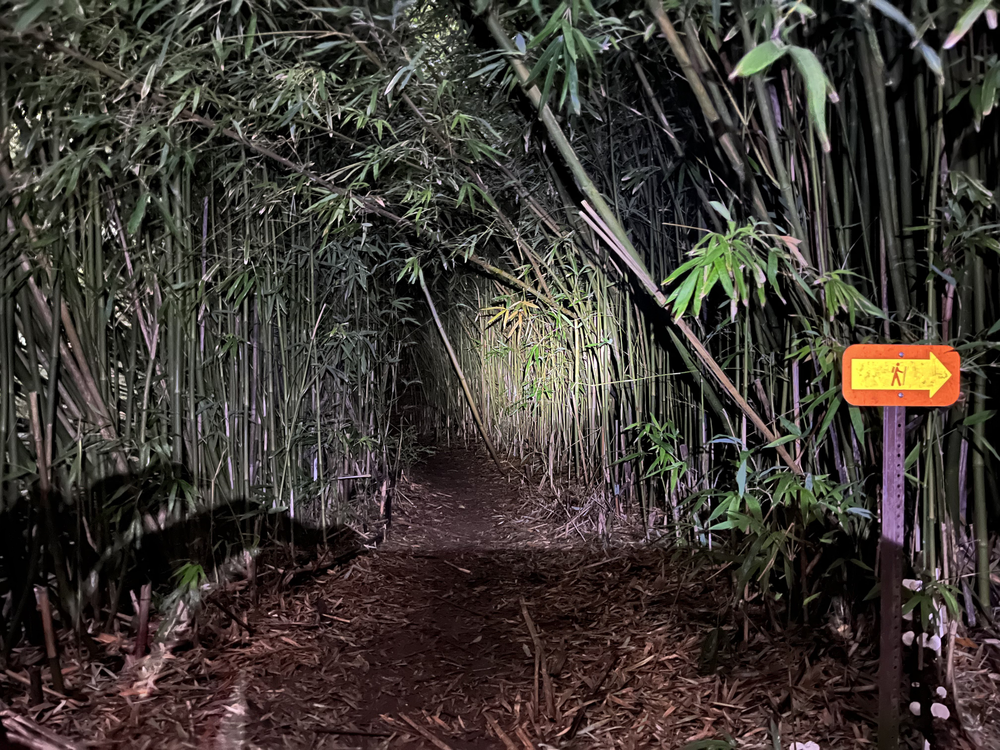 | This shot hailed from my family's most recent trip to Oahu, Hawaii. At 1:00am in the morning, we were desperately attempting to find our way out from a shrouded bamboo trail. |
| 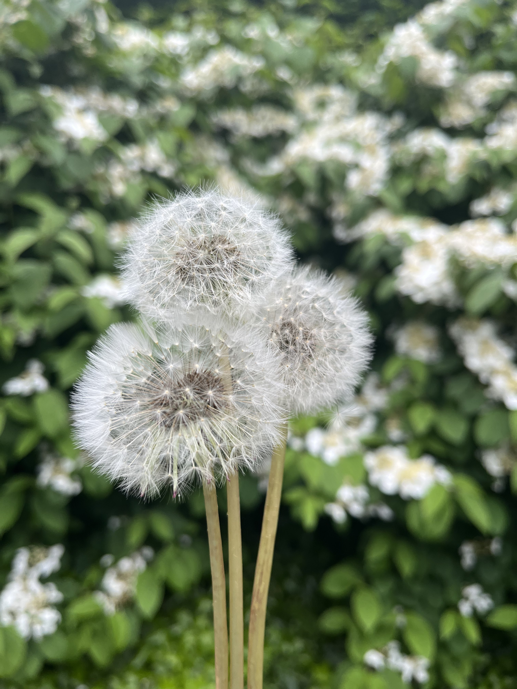 | One of my earliest pictures, this photo was taken one day during my walk home from school. The level of detail an iPhone 13 can capture is quite amazing. |
| 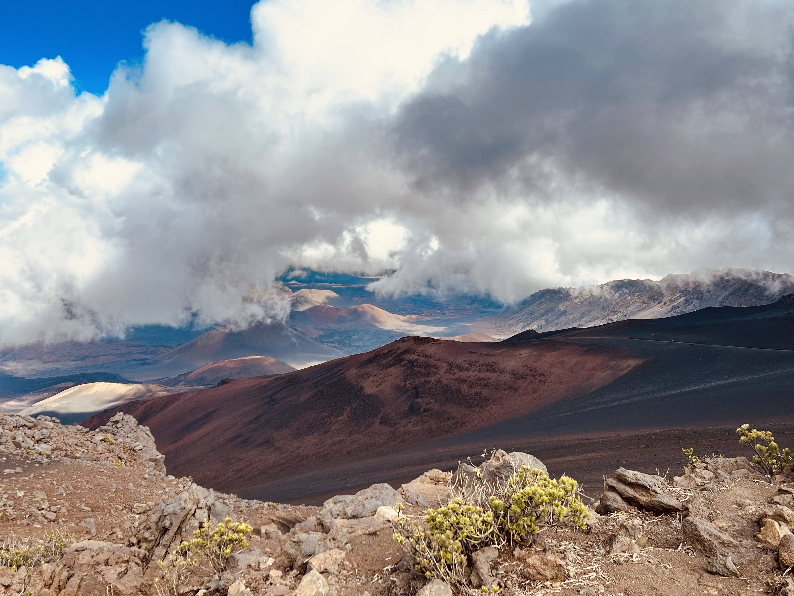 | This photo was taken on one of the longest and treacherous hikes I've ever been on. While gasping for air, I was able to take this photo of the distant mountain ranges and the adjacent clouds that rests above. |
| 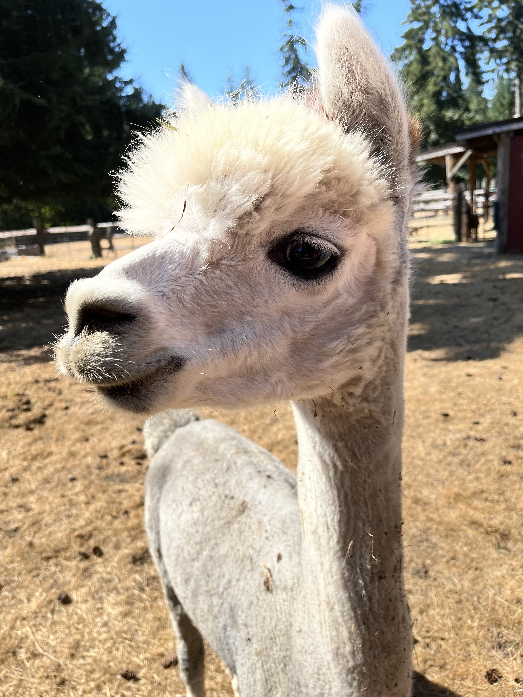 | A close up of an Alpaca from the 9th grade orientation trip. He was posing for sure! |
| 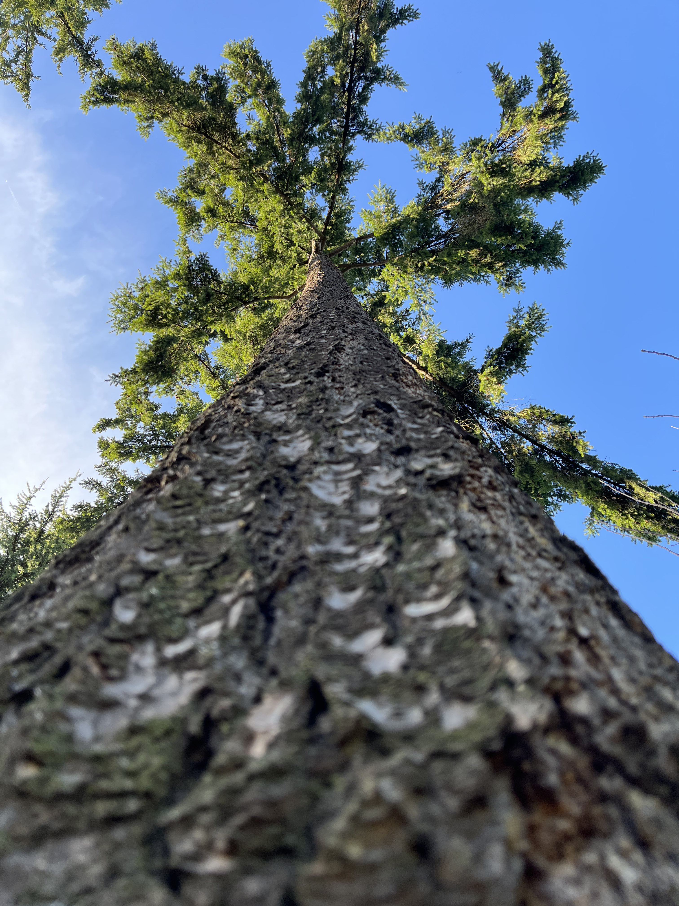 | A tree. A big, tall, tree. |
| 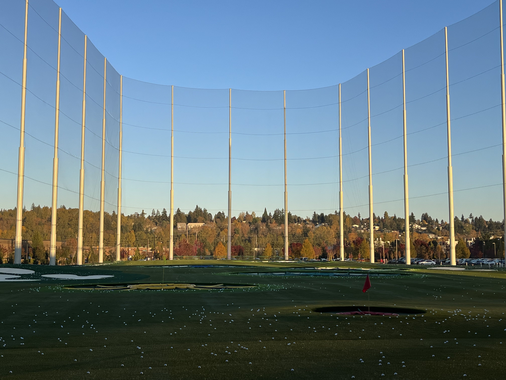 | Sometimes, pure nature doesn't have to be the only source of outdoor beauty. This scene was captured at Jefferson Golf Course one day while I was practicing golf on the range. |
| 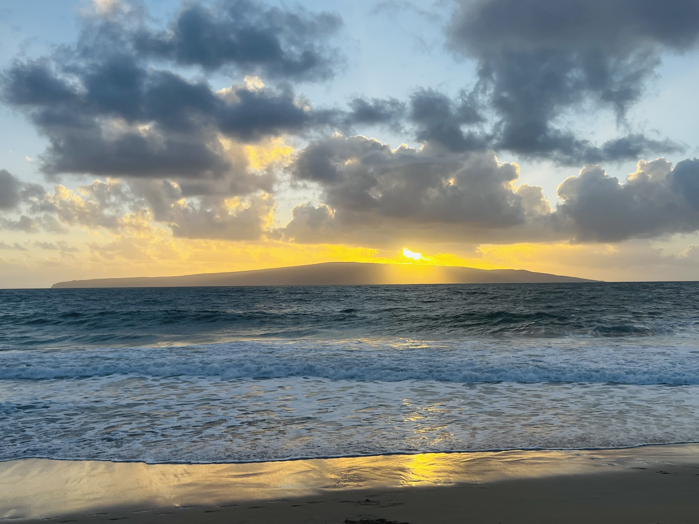 | A rather simple scenery, this picture captures a golden setting sun along the silhouette of a distant mountain range out towards the ocean. |
| 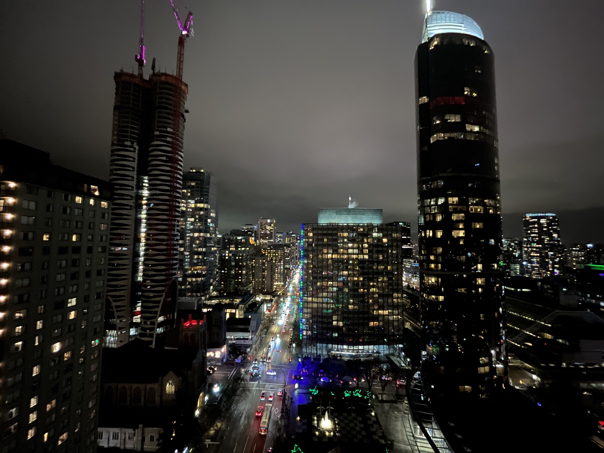 | Although not a picture of nature, this was a spectacular view I captured on the roof of a building in Hawaii. |
| 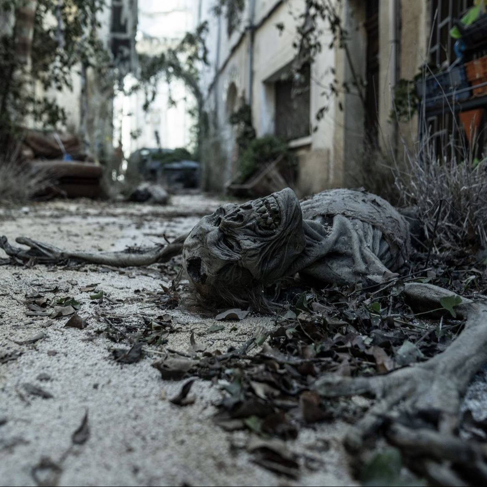 | Lastly, I had to include this shot from my visit to the set of one of my favorite shows of all time - The Walking Dead. |